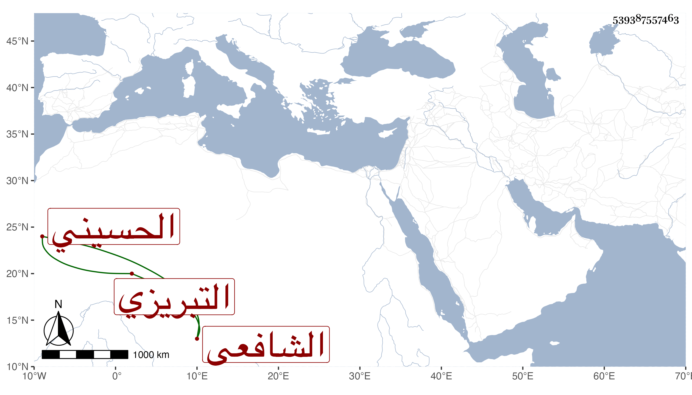

0902Sakhawi.DawLamic.ITO20230111-ara1.EIS1600.539387557463
Biography ID: 539387557463
222
محمد بن عبد الله بن محمد بن عبد الله الجمال بن الجلال ابن القطب بن الجلال الحسيني التبريزي الشافعي أخو أحمد الماضي . أخذ عنه ابن أخته العلاء محمد بن السيد عفيف الدين وصافحه بمصافحته للزين الخوافي بسند لا يثبت مثله .
